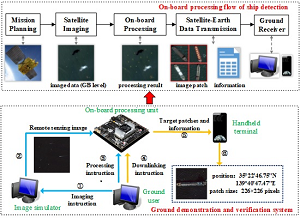
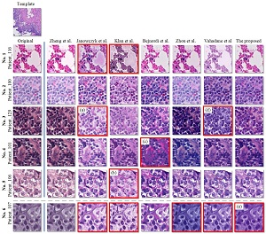
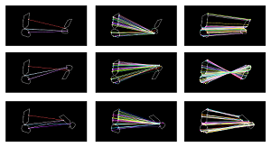

Haopeng Zhang
Assistant Professor | Beihang University
Assistant Professor | Beihang University
 |
On-Board Ship Detection in Micro-Nano Satellite Based on Deep Learning and COTS Component Yuan Yao, Zhiguo Jiang, Haopeng Zhang*, and Yu Zhou Remote Sensing, 2019, 11(7): 762.PDF Abstract BibTeX AbstractMicro-nano satellites have provided a large amount of remote sensing images for many earth observation applications. However, the hysteresis of satellite-ground mutual communication of massive remote sensing images and the low efficiency of traditional information processing flow have become the bottlenecks for the further development of micro-nano satellites. To solve this problem, this paper proposes an on-board ship detection scheme based on deep learning and Commercial Off-The-Shelf (COTS) component, which can be used to achieve near real-time on-board processing by micro-nano satellite computing platform. The on-board ship detection algorithm based on deep learning consists of a feature extraction network, Region Proposal Network (RPN) with square anchors, Global Average Pooling (GAP), and Bigger-Left Non-Maximum Suppression (BL-NMS). With the help of high performance COTS components, the proposed scheme can extract target patches and valuable information from remote sensing images quickly and accurately. A ground demonstration and verification system is built to verify the feasibility and effectiveness of our scheme. Our method achieves the performance with 95.9% recall and 80.5% precision in our dataset. Experimental results show that the scheme has a good application prospect in micro-nano satellites with limited power and computing resources. BibTeX
@Article{YaoRS2019, |
|
Star Detection and Accurate Centroiding for the Geosynchronous Interferometric Infrared Sounder of Fengyun-4A Haopeng Zhang, Yi Su, Lei Yang, Jian Shang, Chengbao Liu, Jing Wang, Shengxiong Zhou, Zhiguo Jiang, and Zhiqing Zhang IEEE Access, 2019, 7: 18510-18520.PDF Abstract BibTeX AbstractExtracting accurate star centroids in the observed star images is one of the key problems for image navigation of the geosynchronous interferometric infrared sounder (GIIRS) of Fengyun-4A Satellite (FY-4A), the first scientific experimental satellite of the new generation of Chinese geostationary meteorological satellite Fengyun-4 series. Compared with star sensors which are widely used for star observation, it is challenging to detect the 2×2 star spot from the focused star images of GIIRS and calculate the star centroid in high precision. In this paper, we propose a star detection and centroiding method based on trajectory search and trajectory fitting. Since the launch of FY-4A in December 2016, our centroiding method has been tested in-orbit for over two years. The extensive experiments show that the star centroiding error of our method is less than 0.3 pixels, which makes an important contribution to image navigation of FY-4A. BibTeX
@Article{ZhangAccess2019, |
 |
Adaptive Color Deconvolution For Histological WSI Normalization Yushan Zheng, Zhiguo Jiang, Haopeng Zhang*, Fengying Xie, Jun Shi, and Chenghai Xue Computer Methods and Programs in Biomedicine, 2019, 170: 107-120.PDF Abstract BibTeX AbstractBackground and Objective Color consistency of histological images is significant for developing reliable computer-aided diagnosis (CAD) systems. However, the color appearance of digital histological images varies across different specimen preparations, staining, and scanning situations. This variability affects the diagnosis and decreases the accuracy of CAD approaches. It is important and challenging to develop effective color normalization methods for digital histological images. Methods We proposed a novel adaptive color deconvolution (ACD) algorithm for stain separation and color normalization of hematoxylin-eosin-stained whole slide images (WSIs). To avoid artifacts and reduce the failure rate of normalization, multiple prior knowledges of staining are considered and embedded in the ACD model. To improve the capacity of color normalization for various WSIs, an integrated optimization is designed to simultaneously estimate the parameters of the stain separation and color normalization. The solving of ACD model and application of the proposed method involves only pixel-wise operation, which makes it very efficient and applicable to WSIs. Results The proposed method was evaluated on four WSI-datasets including breast, lung and cervix cancers and was compared with 6 state-of-the-art methods. The proposed method achieved the most consistent performance in color normalization according to the quantitative metrics. Through a qualitative assessment for 500 WSIs, the failure rate of normalization was 0.4% and the structure and color artifacts were effectively avoided. Applied to CAD methods, the area under receiver operating characteristic curve for cancer image classification was improved from 0.842 to 0.914. The average time of solving the ACD model is 2.97 s. Conclusions The proposed ACD model has prone effective for color normalization of hematoxylin-eosin-stained WSIs in various color appearances. The model is robust and can be applied to WSIs containing different lesions. The proposed model can be efficiently solved and is effective to improve the performance of cancer image recognition, which is adequate for developing automatic CAD programs and systems based on WSIs. BibTeX
@article{ZhengCMPB2019, |
 |
Vision-based Pose Estimation for Textureless Space Objects by Contour Points Matching Xin Zhang, Zhiguo Jiang, Haopeng Zhang*, and Quanmiao Wei IEEE Transactions on Aerospace and Electronic Systems, 2018, 54(5): 2342-2355.Preprint PDF link Abstract BibTeX Abstract
BibTeX
@Article{ZhangTAES2018, |